Přátelé Čerínského údolí
Přehled bývalých vedoucích, dočasně nedostupných vedoucích (např, mateřská dovolená), kamarádů a ostatních návštěvníků tábora.
Dádí
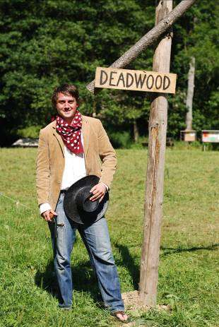- David Novotný (*1984)
- Zástupce hlavního vedoucího, oddílový vedoucí
- Zaměstnání: fyzioterapeut
Milovaná matinka (spoluzakladatelka pozdějšího KOLTu) mě už jako předškoláka vzala poprvé na tábor do Trpišovic… Tam někde to velké a dlouholeté dobrodružství začalo. "Trpka" (vzpomínky na dětství a přírodu patří sem) a pak Čeřín, kde jsem strávil většinu svých táborových let. Rozbořený mlýn, oheň, potok, hygieňák, latrýny, BAŽINA, vana, dítka, příroda, dovednosti, přátelé atd. atd. To jsou ty pravé prázdniny v létě… Přes rok trochu té zábavy, práce, sportu (fotbal, squash, cvičba, snowboard…) a hned zase do Čeřína, kde moje trochu divoké srdce, použité tělo a prořízlá pusa najde klid a harmonii…
Kája
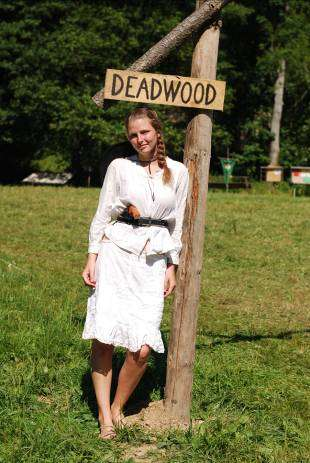- Karolína Půlpánová (*1990)
- Praktikantka
- Zaměstnání: studentka VŠ
Na KOLTí tábory jezdím už od svých sedmi let a tyto tři týdny v přírodě jsou neodmyslitelnou částí mých prázdnin. I když jsem dříve jezdila na 2. běh, k srdci mi přirostl běh 1., kde jsem během těch mnoha let našla spoustu skvělých přátel a naučila jsem se spoustu užitečných věcí, a proto jsem moc ráda, že na tábor mohu jezdit dál jako praktikantka. Kromě tábora jsou mými koníčky tenis, divadlo, cestování a zimní sporty…
Mišák
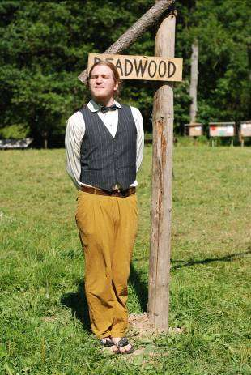- Michal Kunc (*1991)
- Pomocný kuchař
- Zaměstnání: student SŠ
KOLTích táborů jsem se účastnil jako dítě už od svých dvanácti let. Za tu dobu se pro mne staly neodmyslitelnou částí léta, a tak jsem po dosažení horní věkové hranice táborníka neváhal zařadit se mezi vedoucí. Co se mne samotného týče, nejraději mám hru na hudební nástroje, knihy, přírodu a nové zážitky. Od rána do večera se také věnuji (pro většinu nepochopitelným) věcem, které jsou však jen nezbytným ventilem mé potlačené dětské stránky, která se na táborech důrazně hlásí o slovo. Letní tábor by měly být pro děti něčím odlišným, třemi týdny, které si užijí a zapamatují od začátku do konce.
Lapi
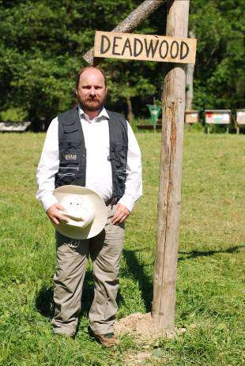- Vladimír Hora (*1972)
- Zdravotník
- Zaměstnání: ekonom
Na tábory jsem začal jezdit již na konci 70 let minulého století (brr. to zní hrozně), díky tomu jsem si prošel postupně podnikové tábory, tábory pionýrské a svazarmovské. Takže jsem byl asi jako každý trochu dříve narozený veden jako jiskra, pionýr a svazák, ale nikdy ne zrovna dvakrát uvědomělý. Ale protože jsme měli štěstí na vedoucí, tak to bylo vždy fajn. A to je to, co mě samotného později asi vedlo k tomu, že jsem chtěl takto nabyté zážitky a zkušenosti předat druhým. Po těchto dětských a praktikantských zážitcích jsem začal dělat hospodáře a za rok na to hlavního vedoucího. Zkrátka když to sečtu kolem a kolem, dostanu se na Ferdu Mravence – práce všeho druhu. Po rozpadu naší bývalé skupiny jsem zjistil, že bez práce pro děti a u dětí to není ono. Takže náhoda a nějak jsem se ocitl u KOLTu. Jinak díky studiu kromě ekonoma dělám i zdravotníka...
Míša "Žiži" Stíhačka
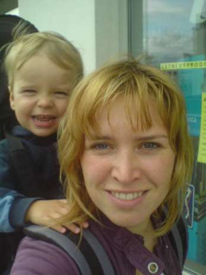- Michala Karpíšková (*1982)
- Oddílová vedoucí
- Zaměstnání: učitelka na mateřské
Na tábory jezdím, co si pamatuji, ale teprve až v patnácti letech jsem se dostala do Čeřína, kde jsem už zakotvila. Když se mrknete, jaký jsem ročník, zjistíte, že už je to pěkná řádka let. Nadchla mě nejen krásná příroda, ale především parta vedoucích, kteří se stali mými nepostradatelnými kamarády. Děti kolem sebe nemám ale jen o prázdninách, protože v „civilu“ jsem učitelka na prvním stupni…zrovna na mateřské dovolené. A to je také důvod, proč bylo moje táborové působení na čas omezeno. Nicméně malý táborník už povyrostl, takže se těšíme na prázdniny do Čeřína...
Fifík
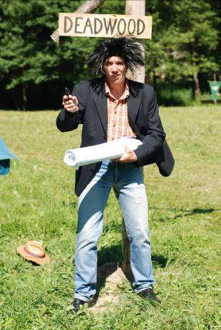- Michal Hoffmann (*1984)
- Oddílový vedoucí
- Zaměstnání: projektový manažer
Všechno to začalo přes kamaráda ze základky Vikiho. Díky Viki! Kdysi dávno mě pozval na jeden tábor a na ten samý tábor jezdím dodnes. Je pravda, že od dob mého prvního seznámení se s „Koltem“ se mnohé změnilo. Mezi to podstatné pro tyhle řádky patří to, že jsem zestárnul a z malého klučiny, který se snažil do puntíku plnil úkoly, které od svých vedoucích dostal, se stal ten, kdo ty úkoly sám zadává.
Každá etapa mého „táborničení“ měla své, a žádnou z nich nemohu ve svých vzpomínkách vynechat ani vyzdvihnout. Na ty rané a bezstarostné, kdy jsem jezdil jako dítě, moc rád vzpomínám. Vše bylo naprosto jasné a jednoduché. V létě se jede na tábor a budeme se všichni prát o každý diplom a za každého bobříka. Nešlo to prostě jinak. :-) Na táborech jsem každoročně potkával své kamarády a partu prima vedoucích, se kterými byla legrace a od kterých jsem se toho vždycky spoustu dozvěděl o táborech, přírodě, životě a vůbec o všem. Jak šel čas, stal se ze mě praktikant a měl jsem obrovské štěstí, že první rok mého „praktikanství“ byl mým vedoucím Lukmen, člověk, kterého si velmi vážím, a který pro mě je, a vždy bude, symbolem našeho tábora. Od něj jsem se naučil hodně a jeho tah na branku v tom, kdy se do něčeho pustí, mi ještě dnes bere dech.
Ani nevím, kolik vody uběhlo, než se ze mě stal vedoucí, není to důležité. To, že do party přišlo spoustu nových lidí, ano. Styl průběhu tábora se trochu změnil, přístup k dětem začal být odlišný snad i v závislosti na tom, jak se měnily ony samotné. Do toho jak šel život, přišlo spolu s ním i spoustu zajímavých činností, které jsem chtěl taky kromě tábora dělat. Začal jsem chodit na vysokou, hodně sportovat, potápět se, jachtařit, pracovat, cestovat, běhat za holkama. Objem mých aktivit se zvětšoval, jenže letním prázdninám to bylo fuk, skálopevně trvaly dva měsíce. No a až na jedny, kdy jsem jel na jachtu do Chorvatska, patřily vždy první tři týdny z „letňáků“ čeřínským luhům a hájům.
Evita
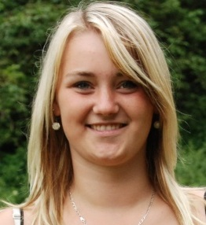- Tereza Tvrzníková (*1993)
- Praktikantka
- Zaměstnání: studentka konzervatoře
V roce 2006 jsem se poprvé rohodla jet na letní tábor. Tak jsem brouzdala na internetu a našla tábor na náderném místě - Čeřín. Potok, stany, příroda a skvělý kolektiv. Od té doby jsem nechtěla jinam a vydrželo mi to až do dnes. Trochu jsem povyrostla, šla na střední školu (Konzervatoř Brno - obor operní zpěv) a z řad dětí jsem vstoupila do řad vedoucích. Prázdniny bez Čeřína si neumím představit,a i když je to pro mě celkem dálka,každý rok se sem hrozně ráda vracím.
Kuňka
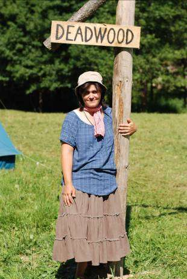- Petra Kučerová (*1977)
- Zdravotník
- Zaměstnání: učitelka MŠ
Jmenuji se Petra Kučerová, je mi 34 let. Na tábory o.s. Kolt jsem začala jezdit v roce 2000 jako praktikantka. Postupně jsem si vyzkoušela pozici vedoucí, zásobovač, zdravotník a teď po mateřské dovolené jsem se vrátila zpět, abych se věnovala kuchyni. V civilním životě jsem učitelka a lektorka anglického jazyka. Učím jak předškolní děti, tak náctileté a dospělé. Mám šestiletou dceru, a proto vím, jaký by měl dětský jídelníček být, aby byl pro děti přitažlivý a zároveň, aby prospíval jejich zdraví. Polní kuchyně je pro každého kuchaře výzvou, a možná i proto se každé léto na letní vaření těším.
Kuba
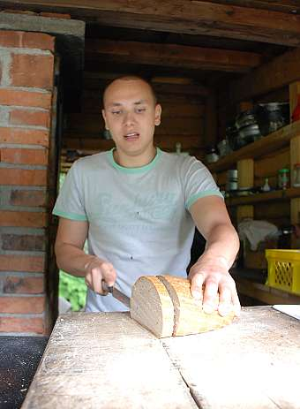- Jakub Löbl (*1988)
- ...
- Zaměstnání: právník
Ančí
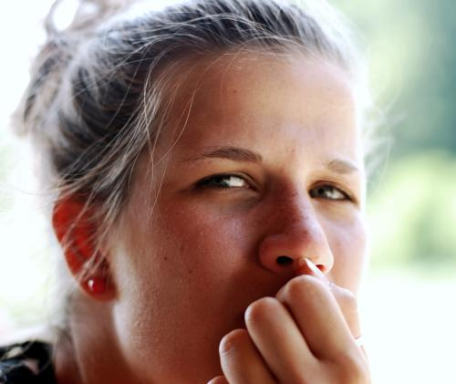- Anna Cajthamlová (*1993)
- Praktikantka
- Zaměstnání: studentka OA Holešovice
Na tento tábor jezdím už od svých šesti let a prázdniny bez něj si už ani nedokážu představit. Narodila jsem se v Praze a jsem tu celý svůj život. Proto je pro mě velice přínosné odjet alespoň jednou za rok někam, kde je čerstvý vzduch a žádný rámus. Celých 14 dní je nabyto skvělými zážitky a hrami. Děti zde poznávají přírodu, nové kamarády a v podstatě i sami sebe. V dnešní době je pro některé děti velice obtížné vydržet pár dní bez elektřiny, splachovacího záchodu a ústředního topení. Právě to ale dodává táborům tu správnou atmosféru, kterou si vaše děti určitě zamilují.
Renča
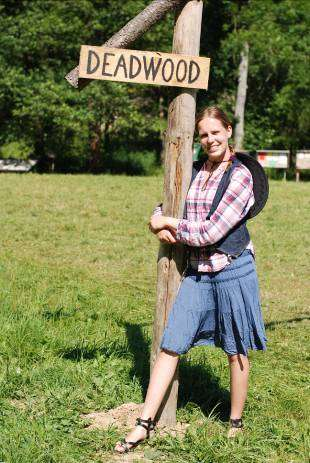- Renata Žvejkalová (*1983)
- Oddílová vedoucí
- Zaměstnání: učitelka MŠ
Od malička jsem byla členkou skautského oddílu, ze kterého jsem ve svých 15 letech odešla, ale stále jsem s přáteli jezdila stanovat. Po gymnáziu jsem poznala Bozďu (mého dlouholetého partnera), který mě seznámil s celým lidem Koltu. Nejdříve jsem se účastnila pouze brigád, ale Čeřín a celá koltí parta mě tak přirostla k srdci, že jsem se chtěla účastnit i táborů a oni měli naštěstí o mě také zájem. Svůj první tábor v krásném jihočeském prostředí jsem absolvovala v roce 2005 a od té doby stále jezdím jako oddílová vedoucí. Myslím si, že jsme parta, která dokáže dětem zpříjemnit a hlavně zpestřit prázdniny.
Domča

- Dominika Šuláková (*1996)
- Praktikantka
- Zaměstnání: studentka SŠ - OA Dušní
Na KOLTí tábor nejezdím nějak dlouho, jako někteří vedoucí,kteří měli to štěstí, že na něj mohli jezdit od dětství. Já jsem vlastně na tábor přišla úplně náhodou. Jezdila jsem na jiný, který se zrušil, tudíž jsem hledala jinou možnost. Mamka mě přihlásila na tento. Nejprve jsem nechtěla, ale teď když vím jaké to tam je, ji mohu poděkovat. Poznala jsem tam mnoho skvělých přátel. Jezdím na LDT i ZDT. Jelikož jsem už „stará“ abych mohla jet jako dítě, zkusila jsem se s Kh! domluvit, zda bych s nimi mohla jezdit jako praktikantka. Tábor jsem si velmi oblíbila, proto jsem se ho nechtěla vzdát. Vždy se na tábor těším, jelikož ráda spolupracuji a komunikuji s dětmi , proto jsem se ujala této pozice. Myslím, že na tábor by děti měli jezdit, je to zpestření prázdnin a děti se mohou odtrhnout od počítačů, elektroniky apod. věcí , na táboře poznají teprve tu opravdovou zábavu v přírodě, zažijí mnoho zajímavých věcí, o kterých budou vyprávět svým kamarádům stejně jako já, když jsem na LDT byla jako dítě. Největším zážitkem z tábora byla naše překrásná „humus bedna“ však to sami poznáte.
Saša
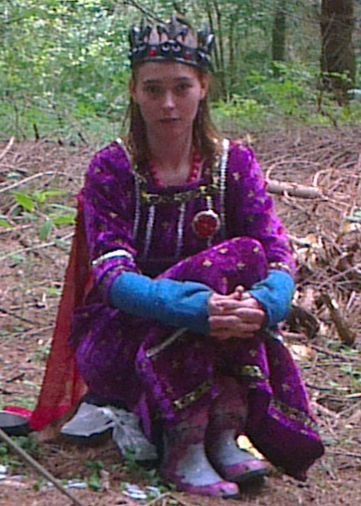- Saša Fritscherová (*1992)
- Praktikantka
- Zaměstnání: studentky
Věřím, že věci se nám dějí kdy mají, a tak když mi v loňském roce kamarád Johny řekl, že hledá posilu na tábor neváhala jsem a ráda se zapojila. Celý život se věnuji dětem a zvířatům, vystudovala jsem předškolní a mimoškolní pedagogiku, učila jsem plavání při ČZU a také děti hlídám. Ve volném čase se věnuji svým psům, vyrábění a hudbě.